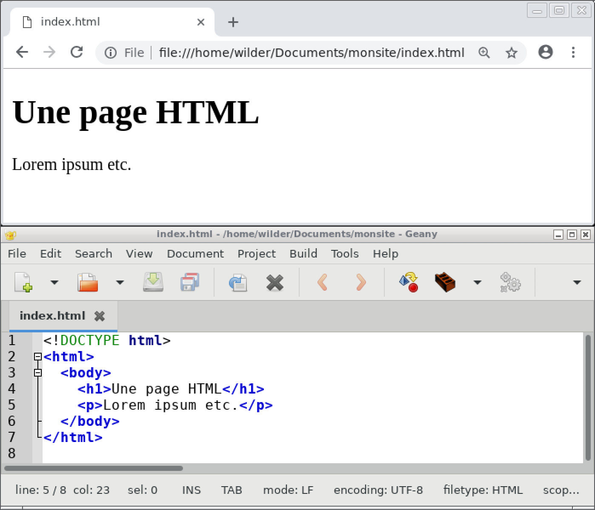
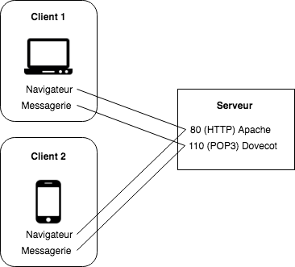

Le web, côté serveur
https://prez.wild31.com/webserver.html
D'abord, un peu de contexte...
Une simple page web 
Une page web est en général
chargée depuis un serveur.
Le web, comme d'autres usages d'Internet (email, FTP, IRC), repose sur le modèle client-serveur.

héberge...

héberge...
Communication entre client et serveur
- Le client envoie une requête au serveur
- Le serveur la traite et renvoie une réponse

Ce sont à la fois les machines et les programmes qui communiquent !
Les échanges entre client et serveur sont régis par un protocole.
Un mot inspiré la vie quotidienne.
Exemple d'un café/restaurant : un client est censé formuler sa demande (requête) au serveur d'une manière appropriée.
Exemples de protocoles utilisés sur Internet :
- HTTP : HyperText Transfer Protocol
- FTP : File Transfer Protocol
- POP : Post Office Protocol
- IMAP : Internet Message Access Protocol
- SMTP : Simple Mail Transfer Protocol
Les ports #1
Un programme serveur est un programme "résident" : il fonctionne en permanence.
La plupart du temps, il est en attente de requêtes : il "écoute".
Chaque programme serveur écoute sur un "canal" différent : on appelle ces canaux des ports.
Les ports #2
Les ports sont standardisés et numérotés
- 80 : HTTP
- 443 : HTTPS (HTTP sécurisé)
- 21 : FTP
- 110 : POP3
- etc.
Les ports #3
Le programme client se connecte au programme serveur en ciblant le port sur lequel ce dernier écoute.
Les ports #4
La plupart du temps, on n'a pas besoin de préciser le port : par défaut, le client utilise le port adéquat.
- Les navigateurs choisissent le port 80 (HTTP), 443 (HTTPS), 21 (FTP) intelligemment.
- Les clients de messagerie choisissent le bon port en fonction de la configuration du compte utilisateur (notamment du type de serveur, POP3 ou IMAP).
Serveurs HTTP Open Source
Si on n'a pas besoin de toutes les fonctionnalités d'un tel serveur, de nombreux langages proposent des serveurs plus légers.
Clients HTTP
- Les navigateurs
- Postman pour tester des APIs
curletwgeten ligne de commandehttrackpour "aspirer" des sitestelnet, client universel (non spécifique à HTTP)
Un peu de pratique, dans le terminal
wget: récupérer l'archivetar: décompresser l'archive
wget https://prez.wild31.com/monsite.tar.gz
tar xvzf monsite.tar.gz
cd monsite
Lancer un serveur avec Python
python3 -m http.server 5000
- Via le navigateur
- Avec Postman
- Avec
wget:wget http://localhost:5000 - Avec
telnet:telnet localhost 5000
Une requête HTTP avec telnet
wilder@ubuntu:~$ telnet localhost 5000
Trying ::1...
Trying 127.0.0.1...
Connected to localhost.
Escape character is '^]'.Une fois lancé, saisir (valider par Entrée deux fois)
GET /Différence avec un autre protocole
Exemple POP3
1. Installation d'un serveur POP3 factice
git clone https://github.com/andris9/n3.git
cd n3
npm install
sudo node pop3_serverExemple POP3 - 2. Dialogue avec telnet
wilder@ubuntu:~$ telnet localhost 110
Trying ::1...
Trying 127.0.0.1...
Connected to localhost.
Escape character is '^]'.Une fois lancé, saisir
USER anyone
PASS 12345
LIST
RETR 1Retour aux serveurs web
Traitement d'une requête
- Vérifier si le chemin demandé correspond à un fichier (à partir de la racine des documents), et l'envoyer s'il existe
- Sinon, si le chemin correspond à un répertoire
- envoyer
index.htmls'il existe dans ce répertoire - lister le contenu du répertoire sinon
- envoyer
- Sinon, envoyer une erreur 404
nginx #1 - Installation
sudo apt-get install nginxnginx #2 - Configuration
# Fichier /etc/nginx/sites-enabled/default
server {
listen 80 default_server;
listen [::]:80 default_server;
root /var/www/html;
# ...
}
listenindique le portrootindique le chemin d'où le serveur lit les fichiers (racine des documents ou document root).
nginx #3 - Créer son propre index
sudo nano /var/www/html/index.htmlY écrire un contenu HTML basique
<!DOCTYPE html>
<html>
<body>
<h1>It works!</h1>
</body>
</html>
Vérifier : http://localhost
nginx #4 - Fichiers journaux
Les journaux (logs) permettent au serveur de sauvegarder des informations :
- sur les accès :
sudo tail -f /var/log/nginx/access.log - sur les erreurs :
sudo tail -f /var/log/nginx/error.log